En soi, vers l'autre
Documentaire sur la compagnie Dyptik

Synopsis : Bouleversée par la compagnie de danse Dyptik que j’ai rencontrée en 2018, je décide de les suivre et de décortiquer leur processus créatif afin de comprendre comment il font pour susciter autant d’émotion. Pour celà, nous allons nous plonger au coeur de cette compagnie, que ce soit dans les temps de recherches et de travail, ou dans leur différentes créations.
Réalisation : Emma Landet-Lacoste / Participation : Compagnie Dyptik (Souhail Marchiche et Mehdi Meghari) / Musique : Patrick De Oliveira
Séléctionné au Brussels Short Film Festival 2025 et Faito Doc International School Film Festival en Italie

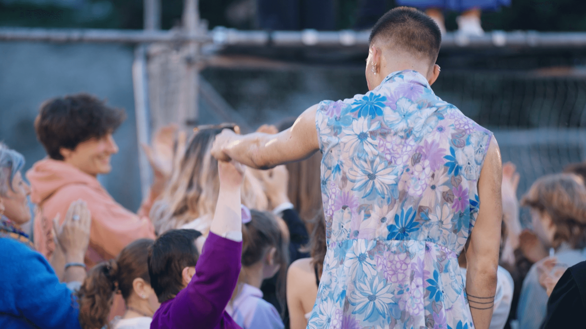
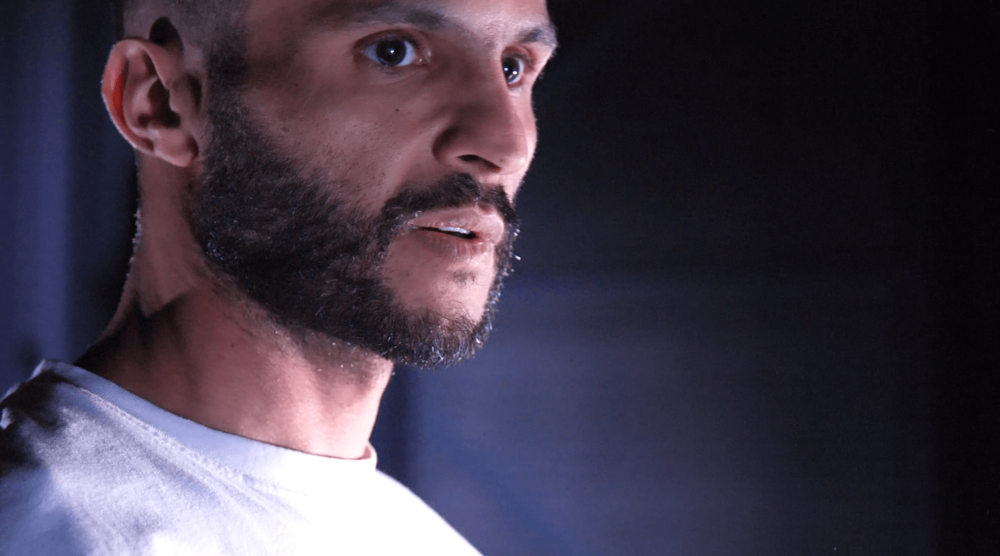
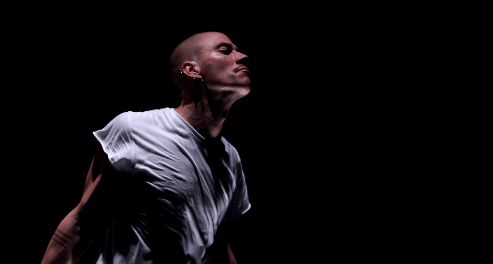
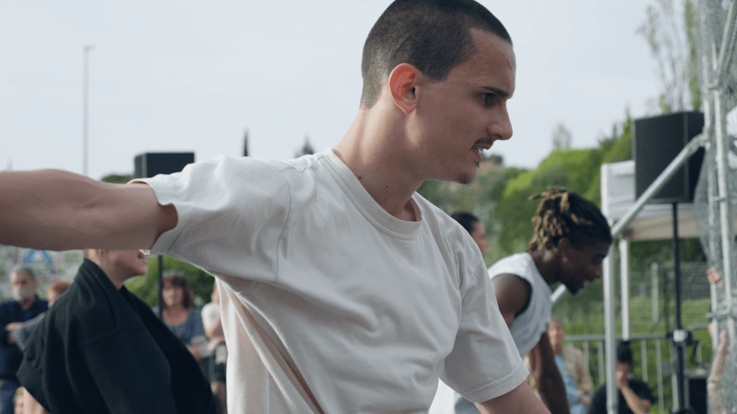
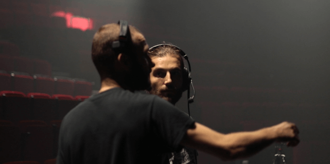
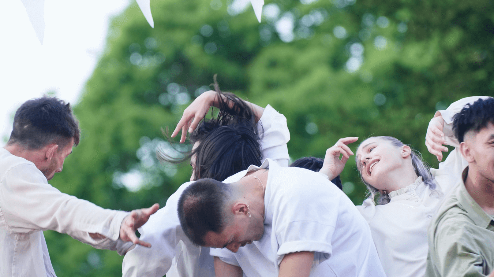
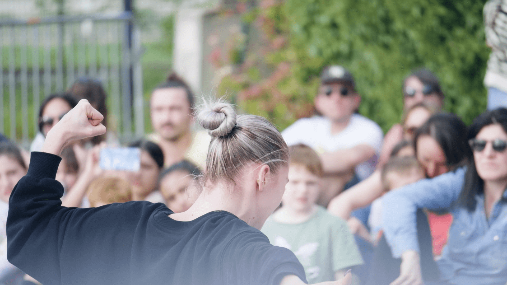
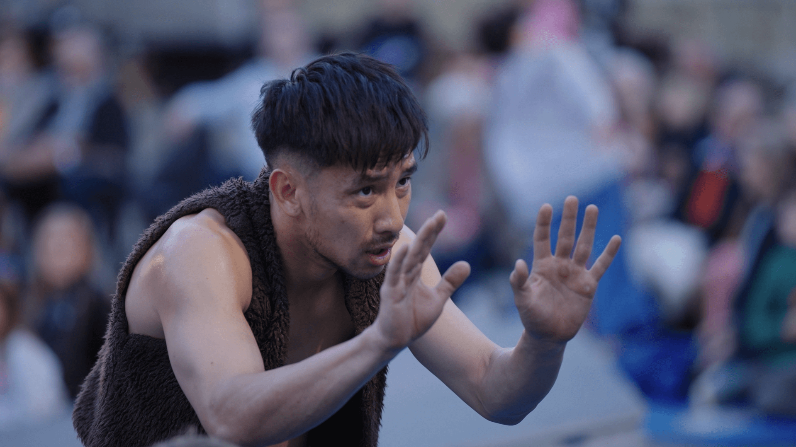
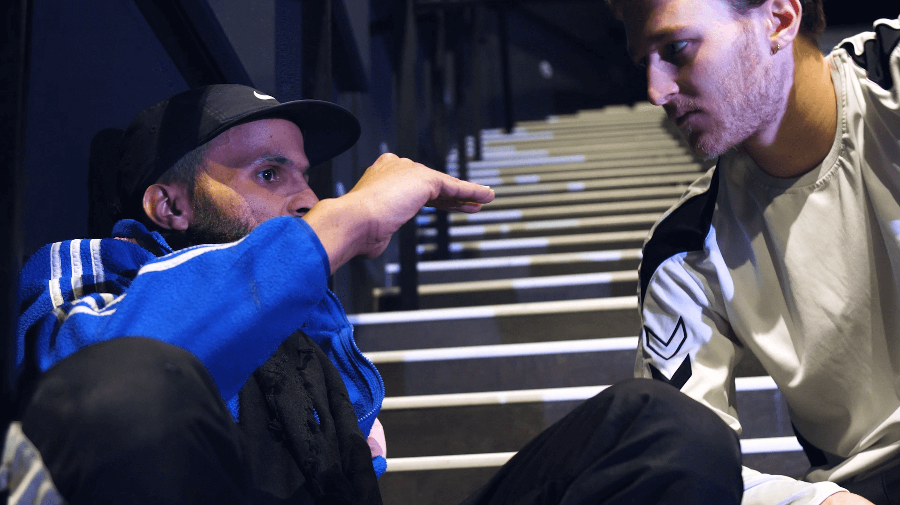
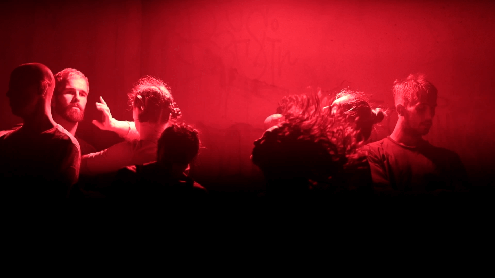
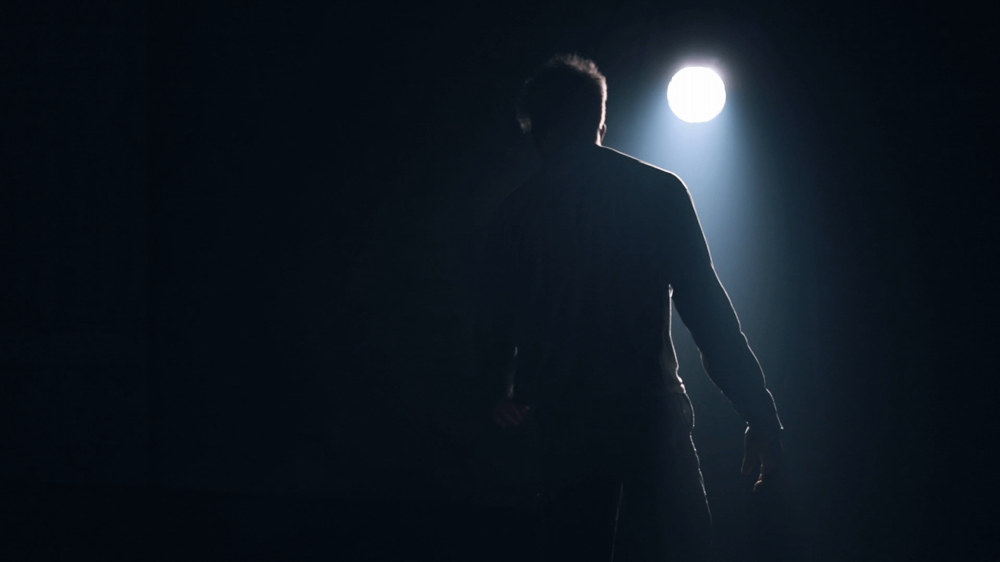
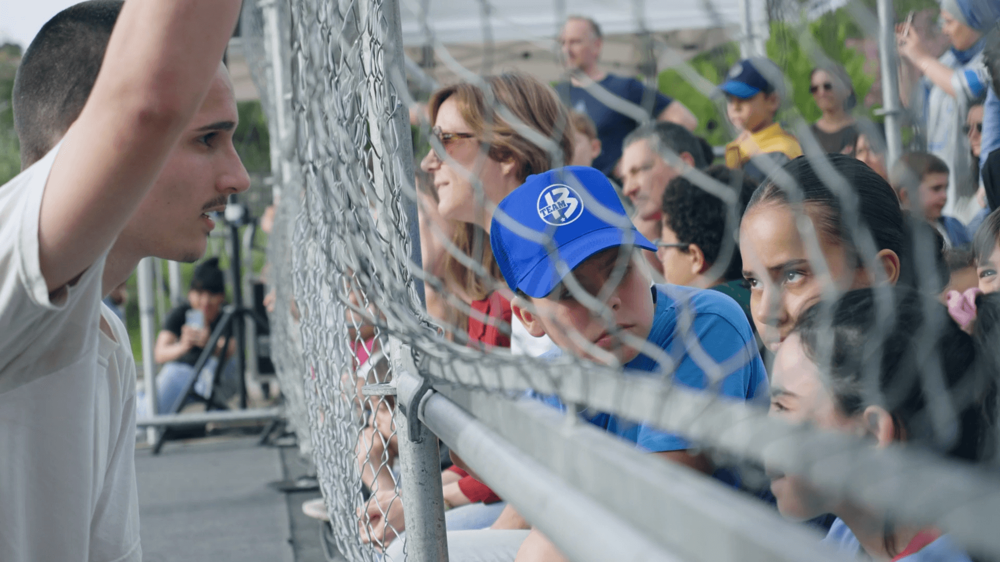
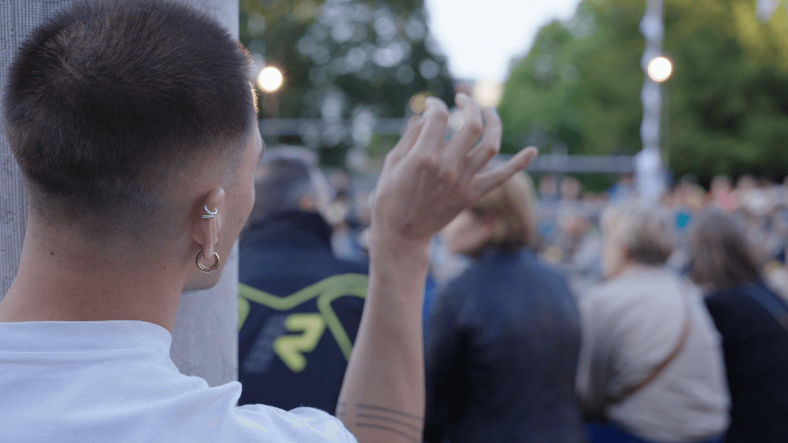
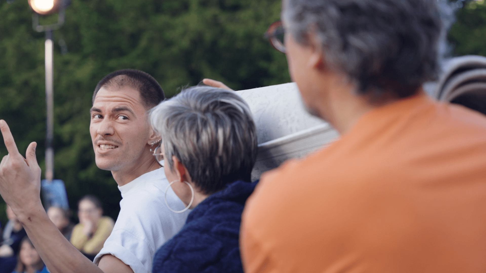
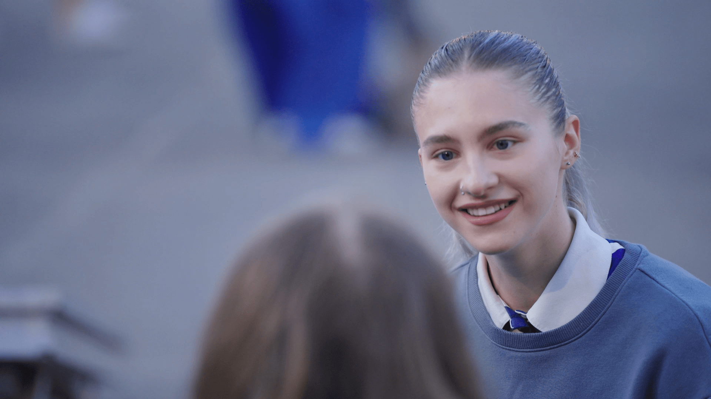
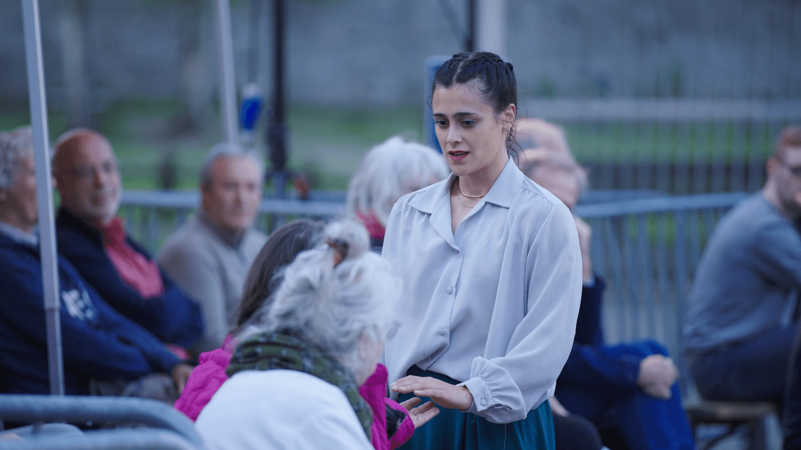
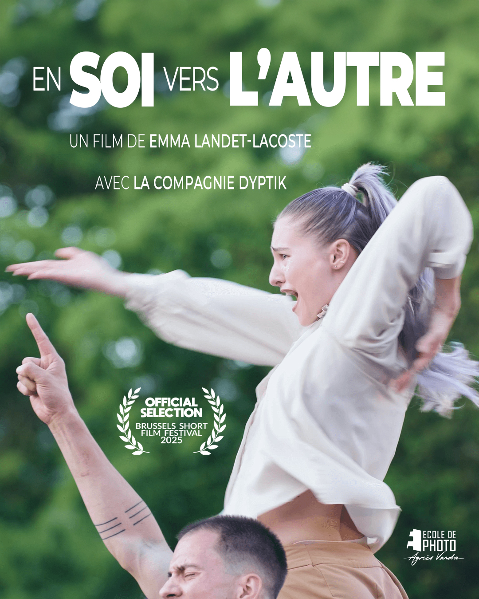